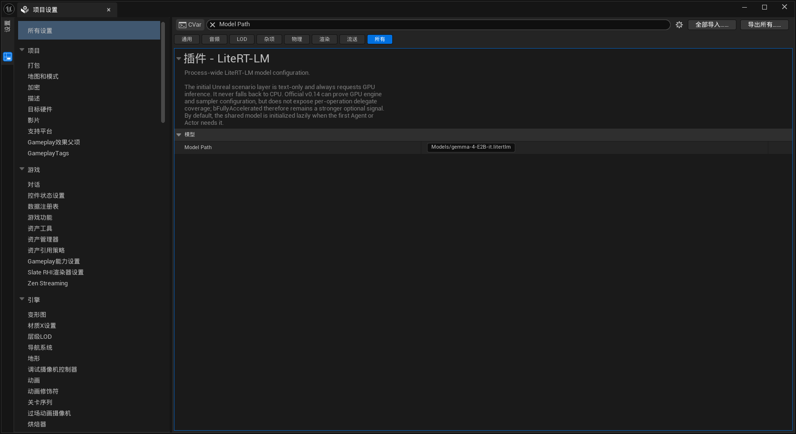
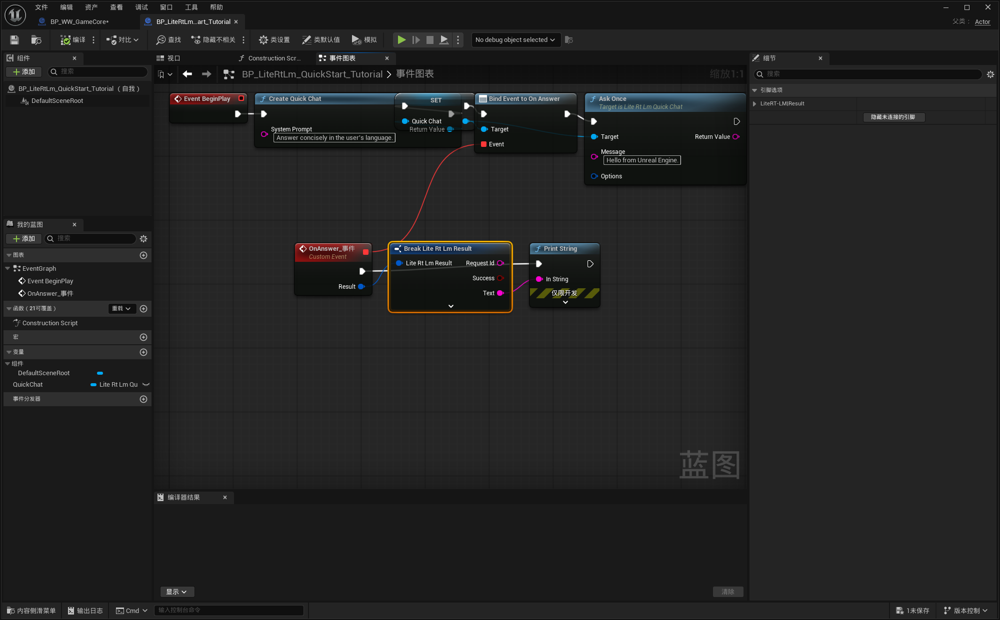

1
一个聊天框或助手
使用 Quick Chat
它会自动创建并持有一个普通 Agent。只绑定一次回答事件，然后调用 Ask Once 或 Ask Streaming。
Quick Chat 或 Agent 都有独立对话和记忆。“单对话”只是易用的兼容外观，并不是全局唯一会话。
按你正在做的东西选择
让 AI 对象的生命周期与游戏对象一致。教程先给出最小可用接口；复杂能力仍然完整保留在底层。
使用 Quick Chat
它会自动创建并持有一个普通 Agent。只绑定一次回答事件，然后调用 Ask Once 或 Ask Streaming。
每个身份一个 Agent
提示词、工具和记忆彼此独立；运行时与模型共享，因此不会为每个角色各加载一份模型。
使用 LiteRT-LM Component
组件在 BeginPlay 创建一个 Agent，并把对话、记忆和工具事件直接暴露给所属 Actor。
使用 MCP Gateway
固定工具结构，把调用路由到外部系统，提交结果后在同一段对话中继续推理。
优先使用 UObject API
C++ 同样可以使用 Quick Chat、Agent、Runtime 和 Gateway；只有确实需要更低层 ABI 时才进入 Native SDK。
模型交付 + 诊断 + 打包
先决定模型如何到达设备，验证模型路径，再在目标设备检查运行时状态和诊断日志。
插件结构树
按纵向场景学习：先完成一个真实功能，再只打开下一项所需体系。
LiteRT-LM Unreal ├── 5 分钟快速开始 │ └── 缺省单对话（Quick Chat） ├── Conversation 对话体系 │ ├── 单对话 │ ├── 多个独立 Agent │ ├── 记忆、存档、纠错 │ └── 工具调用与结构化决策 ├── MCP Gateway 体系 ├── Actor Component 体系 ├── C++ 开发 │ ├── Unreal UObject API │ └── Native SDK / 稳定 C ABI ├── 项目设置、模型交付、运行时状态与诊断 ├── 打包：Win64 / Android └── Demo：多对话狼人杀
推荐顺序
设置模型路径，只创建一次 Quick Chat，绑定 On Answer，把最终文本打印出来。
按钮发送消息，保存对象引用，选择流式或整段输出，并处理忙碌与错误状态。
每个身份创建一个 Agent；私密信息只发给对应角色，真实公共事件写入所有相关记忆。
加入结构化工具调用，按需接入 MCP，开启诊断，完成模型交付与真机打包测试。
来自 UE5 的真实截图
以下截图来自 LiteRTDemo 项目。Quick Chat 节点链使用插件公开节点实际搭建，并在截图前完成了编译和保存。


API 导航
| 体系 | 主要对象 / 节点 | 用来做什么 | 下一页 |
|---|---|---|---|
| Quick Start | Create Quick Chat | 自动管理的一段单对话 | 教程 |
| Conversations | ULiteRtLmAgent | 独立角色、记忆、工具与生命周期 | 教程 |
| Runtime | ULiteRtLmSubsystem | 共享模型状态、就绪状态、队列与诊断 | 体系说明 |
| MCP | ULiteRtLmMcpGateway | 工具结构与外部路由 | 体系说明 |
| Actor Component | ULiteRtLmComponent | 附着在 Actor 上的一段对话 | 体系说明 |
| C++ / Native | 公开头文件 + LiteRtLmNativeSdk.h | 玩法 C++、其他插件与更低层 ABI | C++ 指南 |